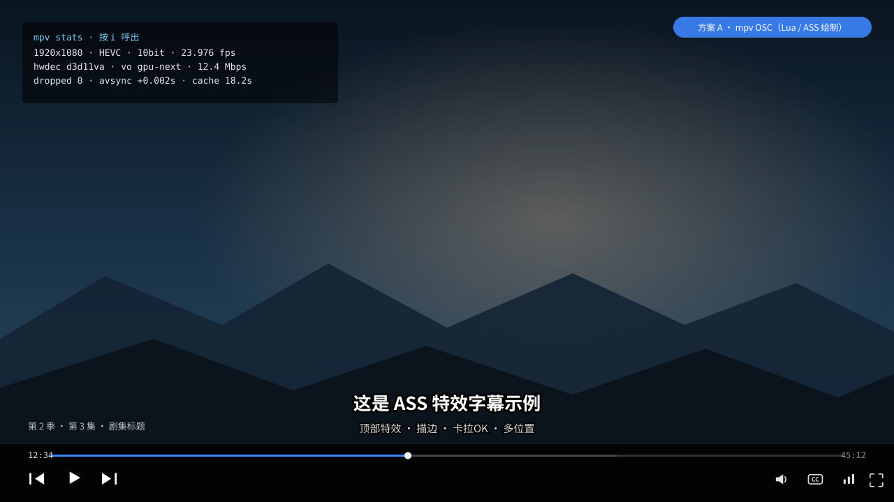
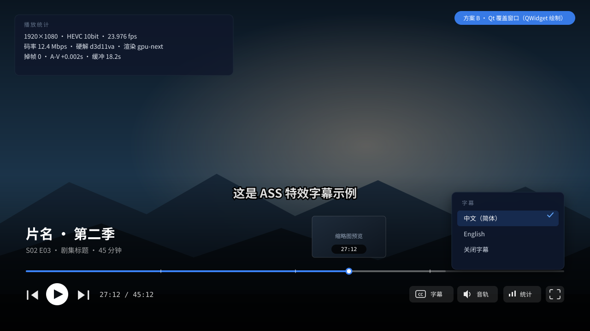

需求：播放/暂停 · 上一集/下一集 · 字幕选择 · 音轨选择 · 键盘快进快退 · 播放统计（SDR 输出）


| 需求 | 方案 A（mpv OSC） | 方案 B（Qt 覆盖） |
|---|---|---|
| 播放 / 暂停 | ✔ 内置 | ✔ |
| 上一集 / 下一集 | ✔ 需把剧集做成播放列表，或绑定 script-message 通知宿主 | ✔ 直接调宿主接口 |
| 字幕选择 | ✔ mpv 内置 select 菜单 | ✔ 自定义菜单（更自由） |
| 音轨选择 | ✔ 同上 | ✔ 同上 |
| 键盘快进 / 快退 | ✔ mpv 默认绑定（←/→） | ✔ Qt 自己实现 |
| 播放统计 | ✔ mpv stats.lua（i 键）；可加自定义按钮 | ✔ 自定义面板，可做得更精致 |
| 视觉设计自由度 | 中（ASS 绘制） | 高（Qt 控件） |
| 工作量 | 低 | 中高 |